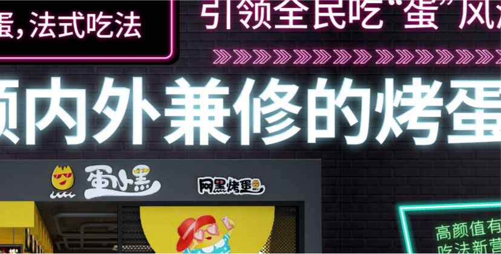
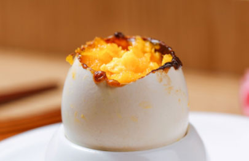
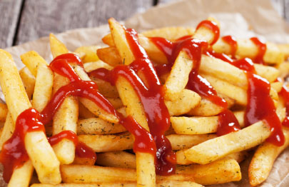
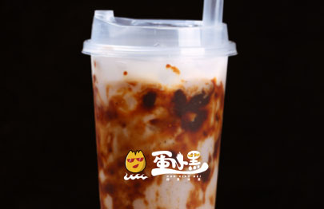

引领全民吃“蛋”风潮
导语：其貌不扬的“黑”蛋如何引爆潮人味蕾？
我国餐饮业收入达到5.5万亿元，并且以每年10%的速度稳步增长。我国4亿年轻人，贡献了74%的餐饮消费，对于新奇好玩的网红美食，有极强的猎奇心与消费能力。
蛋小黑创新新疆烤蛋的方法，用中式口味搭配法式吃法，首创用牛排的方式吃烤蛋，是市面上独树一帜的新型小吃形式。蛋小黑的横空出世，势必会成为年轻消费者争相打卡的网红美食。但是餐饮消费市场巨大，如何为其量身定制适合的品牌形象策略，帮助蛋小黑迅速打开市场知名度，品牌迅速造势，扩大品牌声浪是首当其冲的难题。
新生品牌急需专业的团队为其打造符合调性的全套品牌策划，为能最快速度建立品牌特色，打破餐饮小吃同质化的劣势，拥有产品差异化。江西首佳设备技术有限公司与若邻广告展开了全面合作，希望通过这次合作，打造出全民风靡的爆款街头小吃。
+品牌战略路径一：一颗内外兼修的烤蛋引爆5.5万亿市场打造头号网“黑”蛋小黑，潮萌形象蛋蛋惹人爱！
在中式快餐中，小吃占比逐渐升高，已经成为中式快餐的重要组成部分。数据显示，2018年中式快餐在餐饮整体门店中的占比超过40%，2019年第二季度小吃则在中式快餐中的占比达45%。但是，在小吃产业乃至餐饮行业，百强头部连锁品牌数量却很少。而随着消费升级，小吃场景也在发生变化，正向着由副食向正餐和消夜的方向发展，品类正在重构。小吃如何打破固有路边摊形象，塑造完整的形象体系，是蛋小黑需要做的第一步。
若邻深度剖析了中国餐饮产业和小吃产业发展现状，对小吃品类消费市场和小吃品牌发展进行了详细的分析，洞察了小吃食客消费行为，对蛋小黑品牌的精细化、数字化运营和定位提出了发展建议和大数据解决方案。
参考世界知名快餐品牌，小吃品类门店升级迭代呈现一种强势增长势头，从路边摊到街边店或购物中心店，小吃在环境、体验、产品等方面升级趋势明显，门店小而精致，营造全新消费体验，打造品类新形象和消费认知。小吃细分品类中未被品牌化且继续升级更迭品牌数都开始投入到创新升级的行列，并且步伐不断加快。
精致的门店、极具标示性的IP形象是快餐品牌能迅速吸引消费者眼球的利器。若邻专业形象设计团队，为蛋小黑设计了当下年轻人喜爱的网红店面，同时参考知名品牌肯德基、麦当劳成功的IP形象策略，为蛋小黑打造了以鸡蛋为主角的潮萌IP。一经面世便迅速吸引广大消费者眼球，与用品类小吃迅速拉开档次。
+品牌战略路径二：产品线另辟蹊径，与众不同才能抓住潮人的心
若邻为蛋小黑规划了四大产品产品线，除独家烤蛋产品外，增加其他三大接受度较高的街头小食，打破蛋小黑单一性，为其创造多元复合型的餐饮结构。
-
网黑烤蛋——中国烤蛋，法式吃法新创更适合国人的烤蛋，蛋黄几分熟你定义，慢享三分钟法餐时光，用吃牛扒的方式吃烤蛋！
-
口嗨小食——做鸡同样更出色用尽一切计策，只为让你吃好鸡。
-
恶棍粗薯——小吃界薯我实红超长薯条横空出世。
-
迷魂饮品——生活太难了快喝下这口人间解药。
若邻为蛋小黑量身打造打造四大产品线，通过诙谐形象的语言包装，将习以为常的街头小食摇身一变，变成符合年强消费者消费习惯的网红美食，迅速抢占消费者市场。
+品牌战略路径三：打造轻运营模式，占领地摊经济红利高地
专利百变神车，超轻便餐车全国独有，煎炸煮烤一车搞定。
投资轻：小吃车、形象店、旗舰店投资类型标准化、模块式装修 省钱省力。
经营轻：半成品冷链供货 ，中央厨房食材加工 ，无需繁琐准备轻松运营。
人工轻：0基础也可快速上岗 ，街边店最低1-2人搞定，轻松运营易上手。
成本轻：平均高于60％毛利率，总部统采新鲜原材料，低价优质单价利润高。
后疫情时代，餐饮结构和品牌实体店形式发生了翻天地覆的变化。国家大力倡导地摊经济，鼓励全民创业。地摊经济的上游产业感受到了市场的强烈信心，在地摊经济的带动下，餐饮业未来有巨大的盈利能力。
面对后疫情时代的蛋小黑，若邻迅速为其定制出针对后疫情时代的轻成本运营、招商战略。独树一帜的突破招商加盟必须实体店的局限。减轻投资者的投入成本，同时迅速增加蛋小黑加盟数量。
+结语：
做品牌不仅仅是梳理和提炼市场优势，升级商业表达，更重要的是让企业原本优势价值倍增，创造出独树一帜的品牌声浪。若邻品牌打造行业头部品牌系统理论，为蛋小黑这样的新生品牌，打开迅速裂变增量的渠道。制定多重的营销方案，整合线下资源，打通线上壁垒，优秀的服务团队和运营支持，为合作品牌成为行业内头部品牌打下基础。